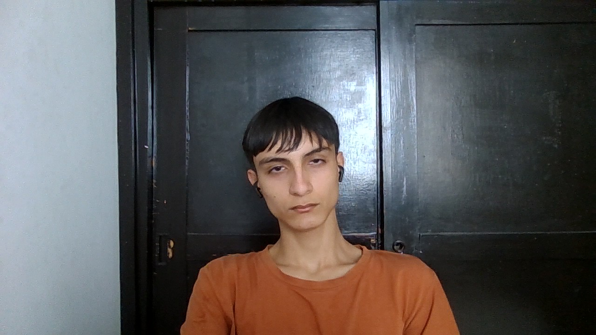

Ejercicios para memmorizar "picture"
Ejercicio Uno: imagen simple con respaldo

Ejercicio Dos: Imagen adaptable según el ancho de la pantalla
Ejercicio Tres: Imagen decorativa de fondo
Ejercicio Cuatro: Imagen en TRES resoluciones
Ejercicio Cinco: Imagen artística con varios formatos